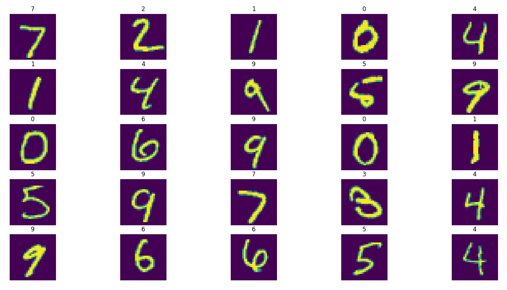
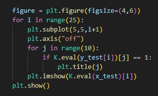
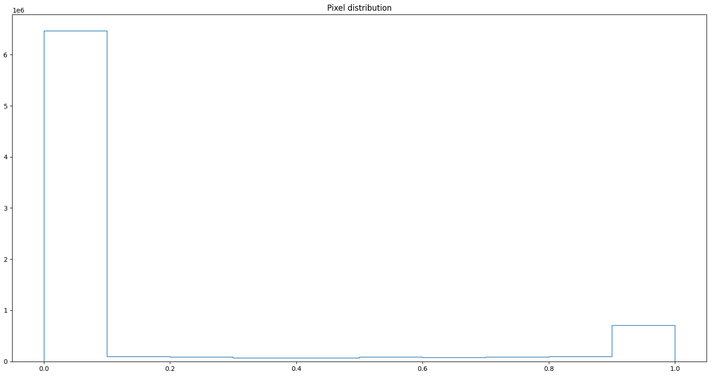
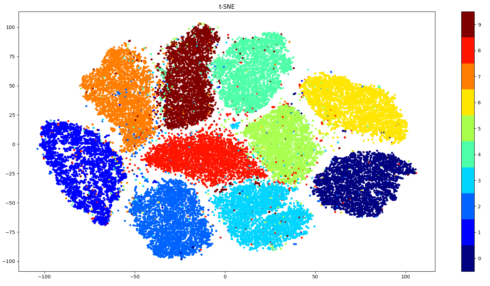
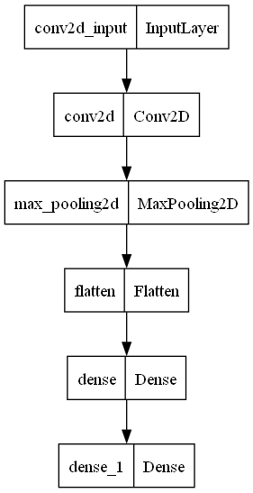

The system consists of the MNIST dataset trained on a convolutional neural network. The MNIST dataset is a well known dataset of single digit numbers. The trained model is then used in a javascript file and this web page was created to make predictions of hand drawn numbers. Here is a set of samples of the MNIST dataset.
The code used to plot these sample images is here. It uses the matplotlib package.
This method seems to give a yellowish tint to the pictures. As you can see from this histogram though the image is essentially black and white
This histogram represents the pixel value of every pixel in a single sample. As you can see the majority of the sample has pixel value of 0 which is black. And the rest is about 1 which is white.
The dataset can be grouped using the t-SNE technique and plotted with a scatterplot to get a better idea of the distribution of features in each class of the dataset.
As stated before this data is then trianed using a convolutional neural network. A visual representation of the model is shown below
This model is then used to train the data. That trained model is then stored and used in a canvas below. You can drawn in a number and the model will use that image to make a prediction.
Confidence: -